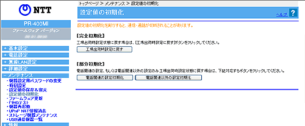

| メンテナンス−設定値の初期化 |
本商品の設定内容を工場出荷時に戻します。
本商品がうまく動作しない場合は、本商品を初期化して初めから設定し直すことをお勧めします。 |
| 初期化には、下記の3通りがあります。 |
| ● |
完全初期化 |
| ● |
部分初期化（電話関連の設定初期化） |
| ● |
部分初期化（電話関連以外の設定初期化） |
|
| |
| ※「Web設定」画面に表示されているボタンについての説明は こちら |
|  |
|
| ［完全初期化］ |
| 本商品の設定を工場出荷状態に戻します。 |
| 1. |
［工場出荷時設定に戻す］をクリックする |
| 2. |
［OK］をクリックする
本商品が起動したあと登録ランプが緑点滅、または緑点灯すると、初期化が完了します。
なお、工場出荷状態に戻した場合、初期状態ランプが橙点灯します。 |
| 3. |
本商品再起動後、再表示を促す画面が表示されるので、［再表示］をクリックする |
| 4. |
「機器設定用パスワードの初期設定」画面が表示されるので、再度設定する場合は、機器設定用パスワードを設定する |
|
| |
＜お知らせ＞
- 本商品を初期化すると、今までに設定した内容は消去されます。ご注意ください。
- 本商品を完全初期化すると、ひかり電話に関する設定もすべて消去されます。初期化後、本商品が起動すると、再度ひかり電話の自動設定が行われます。ひかり電話の利用が可能になると、登録ランプとひかり電話ランプが緑点灯します。ランプの状態を確認してください。
- 本商品に設定する接続先ユーザ名や接続パスワードは重要な個人情報です。
情報を盗まれると悪用される可能性がありますので、情報の管理には十分お気をつけください。
本商品を当社に返却したり廃棄したりする場合など、本商品の利用をやめる際は、必ず初期化を行い、設定された情報を消去してください。
|
| |
| ［部分初期化］ |
| 電話関連の設定、もしくは電話関連以外の設定のみを初期化します。 |
| 1. |
［電話関連の設定初期化］または［電話関連以外の設定初期化］をクリックする |
| 2. |
［OK］をクリックする |
| 3. |
本商品再起動後、再表示を促す画面が表示されるので、［再表示］をクリックする |
| 4. |
「機器設定用パスワードの初期設定」画面が表示されるので、再度設定する場合は、機器設定用パスワードを設定する |
|
| |
＜お知らせ＞
- ［部分初期化］はひかり電話サービスをご契約のお客様のみ表示されます。
- ［電話関連の設定初期化］は、「電話設定」でユーザが設定した値を初期化します。
- ［電話関連以外の設定初期化］は、「電話設定」以外でユーザが設定した値を初期化します。
| ※ |
ただし、機器設定用パスワードと各アクセスログは初期化されません。 |
|
|
| ↑ページのトップへ |